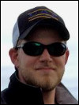

Erin Trochim: completed her interdisciplinary Ph.D. in remote sensing hydrology in Fall 2015 and was co-advised by Doug Kane. Erin was a recipient of the NASA Earth System Science Student Fellowship and was also supported by the UAF Graduate School. Erin characterized water tracks in the Imnavait Basin in Arctic Alaska. Her PhD research resulted in 3 peer-reviewed publications and several conference presentations. The presentation at the circumpolar remote sensing conference fetched her the best poster award. Erin can be reached at erintrochim@gmail.com or at 907-4741157.
 Derek Starkenburg: completed a PhD in atmospheric science in summer 2015. His research spanned the areas of micrometeorology, remote sensing and hydrology and was funded through a NASA project for mapping and monitoring evapotranspiration in interior Alaska. Derek was co-advised by Javier Fochesatto and had Jordi Cristobal, Rudiger Gens, and Doug Kane as his committee members. He was passionate about science education and continued with post-doctoral research in science data visualization at University of Michigan. He can be reached at derekstarkenburg@yahoo.com.
Derek Starkenburg: completed a PhD in atmospheric science in summer 2015. His research spanned the areas of micrometeorology, remote sensing and hydrology and was funded through a NASA project for mapping and monitoring evapotranspiration in interior Alaska. Derek was co-advised by Javier Fochesatto and had Jordi Cristobal, Rudiger Gens, and Doug Kane as his committee members. He was passionate about science education and continued with post-doctoral research in science data visualization at University of Michigan. He can be reached at derekstarkenburg@yahoo.com.

Joshua (Josh) Miller: completed an MSc in Geology in Fall 2013. Josh developed a subsurface geologic model for the Pilgrim geothermal resource near Nome, Alaska. He also travelled to Iceland to learn about alternate energy policy. After graduation, he started working as a geologist with BP Alaska. Josh loves to explore new research ideas, be out in the field, and take on leadership roles. He is also passionate about photography and has a rich collection of photographs of Alaska landscapes. He can be reached at joshuakeithm@gmail.com.
Arvind Chittambakkam: graduated in summer 2013 with a Masters degree in Geophysics. His research was focused on 'Development of Reservoir Stimulation Model at Pilgrim Hot Springs Using TOUGH2' and was funded by the Department of Energy and Alaska Energy Authority, as part of a larger grant to ACEP for developing innovative techniques in geothermal exploration. Arvind was co-advised by Ronni Daanen. Arvind now works for Shell and is based in Houston, Texas. He can be reached at caarvind83@gmail.com.
Angie Floyd: completed her Masters in Geology in Fall 2012. Her thesis was titled 'Applicability of Synthetic Aperture Radar for Investigating River Ice Breakup on the Kuparuk River, Northern Alaska'. Angie was jointly supported by UAF Dept of Geology & Geophysics and UAsScenario Network and Planning (SNAP) program. After graduating Angie started working with SNAP. She can be reached at angelicafloyd@gmail.com.
Kate Schaefer: completed an interdisciplinary Masters thesis in GIS and Emergency Management Services. Kate used network analysis in ArcGIS for route planning. She developed emergency evacuation scenarios and compiled a map book for emergency responders where pertinent information (eg nearest evacuation point, time for evacuation) is displayed for each locality in the Fairbanks North Star Borough (FNSB). Her research was partly funded by the FNSB and partly by NSFs GK12 program. Kate now works as a GIS Analyst at U.S. Department of State and can be reached at kate.schaefer09@gmail.com.
 Lila Tauzer: started with an interdisciplinary Masters degree in remote sensing and Arctic biology but later switched to s atraight Biology degree with Dr. Abby Powell. Lila used archived aerial photos and satellite images for parts of Fairbanks, Alaska, to map local habitat changes. She collected data on bird species inhabiting this area in winter and summer time to compare with similar data collected in the early 70s. Her project was jointly funded by the Alaska Space Grant Program (ASGP), the Alaska Bird Observatory (ABO), and other UAF resources. Lila can be reached at lmtauzer@yahoo.com.
Lila Tauzer: started with an interdisciplinary Masters degree in remote sensing and Arctic biology but later switched to s atraight Biology degree with Dr. Abby Powell. Lila used archived aerial photos and satellite images for parts of Fairbanks, Alaska, to map local habitat changes. She collected data on bird species inhabiting this area in winter and summer time to compare with similar data collected in the early 70s. Her project was jointly funded by the Alaska Space Grant Program (ASGP), the Alaska Bird Observatory (ABO), and other UAF resources. Lila can be reached at lmtauzer@yahoo.com.
Jason Stolarski: completed a Ph.D. in fisheries remote sensing being co-advised initially by Joe Margraph, and later by Trent Sutton. He studied the thermal habitat of Dolly Varden, a fish specie that is abundant in the coastal waters of Arctic Alaska. These fish are known to be sensitive to a very specific and small temperature range. Changing temperatures of coastal waters in response to recent climate change may therefore affect the fish health and distribution. He now works as a fish biologist III with the State of Massachusetts
 Santosh Panda: compled his Ph.D. in geology with emphasis in remote sensing. He used remote sensing and field data to map, model and predict areas of near surface permafrost in the proposed gas pipeline corridor in Alaska. The project was in partnership with the Alaska Division of Geological and Geophysical Surveys (DGGS) and was initiated in partnership with Dr. Diana Solie. Santosh received funding support from DGGS, ASGP and UAFs Department of Geology and Geophysics. He is now a post-doctoral fellow at UAFs GI Permafrost Lab and can be reached at skpanda@alaska.edu.
Santosh Panda: compled his Ph.D. in geology with emphasis in remote sensing. He used remote sensing and field data to map, model and predict areas of near surface permafrost in the proposed gas pipeline corridor in Alaska. The project was in partnership with the Alaska Division of Geological and Geophysical Surveys (DGGS) and was initiated in partnership with Dr. Diana Solie. Santosh received funding support from DGGS, ASGP and UAFs Department of Geology and Geophysics. He is now a post-doctoral fellow at UAFs GI Permafrost Lab and can be reached at skpanda@alaska.edu.
 Sudipta Sarkar: completed his Masters degree in 2008. He mapped hydrocarbon anomalies in the Alaska North Slope and proposed a structural model that could potentially explain the surface signatures of selected hydrocarbon sources. His study was funded by the Bureau of Land Management (BLM). Sudipta completed his PhD from University of Southampton, UK, on offshore gas hydrate exploration. His PhD thesis received the Best Geophysics Thesis Award from the Royal Astronomical Society. He is now a researcher at GEOMAR, Kiel, and can be reached at ssarkar@geomar.de.
Sudipta Sarkar: completed his Masters degree in 2008. He mapped hydrocarbon anomalies in the Alaska North Slope and proposed a structural model that could potentially explain the surface signatures of selected hydrocarbon sources. His study was funded by the Bureau of Land Management (BLM). Sudipta completed his PhD from University of Southampton, UK, on offshore gas hydrate exploration. His PhD thesis received the Best Geophysics Thesis Award from the Royal Astronomical Society. He is now a researcher at GEOMAR, Kiel, and can be reached at ssarkar@geomar.de.
 Kristin Papp: completed her Masters degree in early 2008. Her research on integrated analysis of permafrost features, gas seeps, gas hydrate and geologic structures around the Eileen fault zone, southwest of Prudhoe bay, Alaska, was funded by the Bureau of Land Management (BLM). Besides proposing models of hydrocarbon seepage to teh surface, Kristin used elevation and vegetation anomaly data for detailed mapping of pingos (ice core mounds) in her study area. Kristin now works for BP Alaska and is based in Anchorage. She can be reached at Kristin.Papp@bp.com.
Kristin Papp: completed her Masters degree in early 2008. Her research on integrated analysis of permafrost features, gas seeps, gas hydrate and geologic structures around the Eileen fault zone, southwest of Prudhoe bay, Alaska, was funded by the Bureau of Land Management (BLM). Besides proposing models of hydrocarbon seepage to teh surface, Kristin used elevation and vegetation anomaly data for detailed mapping of pingos (ice core mounds) in her study area. Kristin now works for BP Alaska and is based in Anchorage. She can be reached at Kristin.Papp@bp.com.
 Jeff Green: graduated in 2007 with a Masters degree in geophysics and an emphasis in remote sensing. His research, that was started under the supervision of my former colleague Claude Duguay, involved assessment and improvement of passive microwave snow retrieval algorithms in an Arctic lake-rich region in Alaska North Slope. Jeff currently works for a local geoconsultation company in Fairbanks, Alaska. He is an excellent photographer and occasionally helps out with fieldwork for Arctic research projects. He can be reached at jeffgreen@gmail.com or at 907-3880821. (Homepage at www.jeffgreenphotography.com)
Jeff Green: graduated in 2007 with a Masters degree in geophysics and an emphasis in remote sensing. His research, that was started under the supervision of my former colleague Claude Duguay, involved assessment and improvement of passive microwave snow retrieval algorithms in an Arctic lake-rich region in Alaska North Slope. Jeff currently works for a local geoconsultation company in Fairbanks, Alaska. He is an excellent photographer and occasionally helps out with fieldwork for Arctic research projects. He can be reached at jeffgreen@gmail.com or at 907-3880821. (Homepage at www.jeffgreenphotography.com)
Thomas Oommen: graduated in 2006 with an interdisciplinary Masters degree in systems engineering. His research was funded by the Mineral Management Services and he was co-supervised by Debasmita Misra. His thesis involved geodatabase development and GIS based analysis for resource assessment of placer platinum in the offshore region of Goodnews Bay, Alaska. Thomas completed his Ph.D. from Tufts University and is now a tenure-track faculty at Michigan Technological University. He can be reached at thomas.oommen.c@gmail.com. More info: http://thomasoommen.com/GIS.aspx
 Antony (Tony) Berthelote: Tony was my first US graduate student who graduated with a Masters degree in Geophysics in 2005. He carried out scaled laboratory experiments to simulate conditions where a heat source, eg coal seam fire or lava tube, was present at depth. He then derived an empirical function to estimate the depths of these linear hot sources using the associated surface temperatures as input. Tony completed his PhD. from University of Montana in 2013 and is now a faculty member at the Salish Kootenai College in Montana. He can be reached at aberthelote@yahoo.com or at 406-2754897.
Antony (Tony) Berthelote: Tony was my first US graduate student who graduated with a Masters degree in Geophysics in 2005. He carried out scaled laboratory experiments to simulate conditions where a heat source, eg coal seam fire or lava tube, was present at depth. He then derived an empirical function to estimate the depths of these linear hot sources using the associated surface temperatures as input. Tony completed his PhD. from University of Montana in 2013 and is now a faculty member at the Salish Kootenai College in Montana. He can be reached at aberthelote@yahoo.com or at 406-2754897.
Chunqiang Wang and Tilahun Kerse: Chunqiang (China) and Tilahun (Ethiopia) both graduated from ITC in 2002. Chunqiang used thermal bands from ASTER and color infrared aerial photos of the Wuda coalfield in China to detect thermal anomalies and associated surface cracks and subsidence zones. Tilahun used hyperspectral DAIS data to map soil salinity in parts of Spain. He also had access to laboratory analysis (soil geochemistry data) for soil samples from the study area for selecting spectral end members.

Christopher Duku, Simon Njuguna, Ebenezer Agyakwabadu, Santa Gilgonzalez, Mulumebet Yigletu, John Baga Arumba: 2001 was a busy year with six students from the batch of geological resource management and environmental geology (GRMEG) program (now a part of the division of Earth systems analysis) graduating at the same time. Their theses were on inter-related topics, all dealing with various aspects of remote predictive mapping in the Tabernas area in Spain .

Kenya Nunez Cambra and Mongontsetseg Baldondarj: were my first graduate students. Their theses were about using remote sensing data and digital image processing techniques in conjunction with field information to update existing geological maps of parts of their country. Kenya's study area was the San Antonio del Sur area in southeast Cuba and Monogon's study area was near Ulambataar, Mongolia. Both Kenya and Mongon work for the national geological survey in their respective countries.